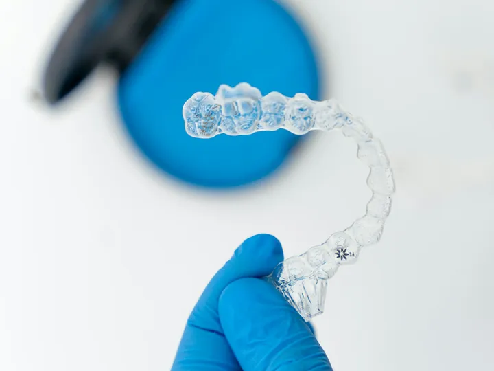

Ortodoncia invisible
Férulas transparentes y removibles, Invisalign®
La clara alternativa a los brackets. El tratamiento Invisalign® es un sistema innovador de ortodoncia que se caracteriza por ser prácticamente invisible. No produce roces ni heridas como los clásicos brackets.